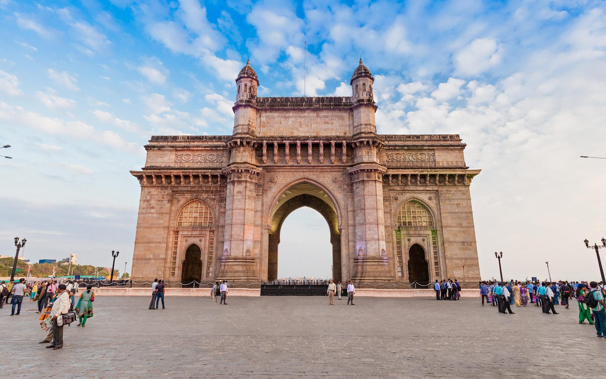

Maharashtra
"The Land of Warriors and Waves"
Quick Facts
Popular Tourist Attractions
Gateway of India
An iconic monument in Mumbai by the Arabian Sea.

Ajanta Caves
UNESCO heritage site known for ancient Buddhist art and architecture.
Raigad Fort
Historic fort of Chhatrapati Shivaji Maharaj offering panoramic views.
Nature & Wildlife
Home to sanctuaries like Tadoba, Pench (shared), and Sanjay Gandhi National Park. A blend of mountains, coastlines, and dense forests.
Famous Personalities
- Chhatrapati Shivaji Maharaj: Legendary Maratha warrior and king.
- B. R. Ambedkar: Architect of the Indian Constitution.
- Sachin Tendulkar: Cricketing icon from Mumbai.
Local Handicrafts
Famous for Paithani sarees, Warli paintings, Kolhapuri chappals, and bidriware.
Climate
Tropical climate with hot summers, monsoon rainfall from June to September, and mild winters.
Culture & Festivals
Festivals
Ganesh Chaturthi is the most celebrated festival, along with Gudi Padwa and Makar Sankranti.
Dance & Music
Lavani and Powada are popular traditional performances with strong rhythmic expressions.
Cuisine
Vada Pav, Misal Pav, Puran Poli, and Modak are iconic delicacies of the state.
Clothing
Men wear dhoti-kurta with pheta; women wear nauvari sarees in traditional drapes.
Did You Know? Mumbai, the capital of Maharashtra, is the financial capital of India and home to Bollywood.
Note: Information may be subject to updates. Kindly notify us of any discrepancies.